FIELD MATH · PALETTE SCIENCE · FINISH PASSES
A field guide to
procedural color.
One palette. One seed. The math makes the difference. Explore the generators, compare each finish against its untouched input, then follow a real wallpaper from palette to PNG.
An engine is field math. A preset supplies palette distributions and optional overrides. Today, resolution is explicit config → preset override → built-in default; the fallback engine is simplex, not a random engine. The draft engines/*.json layer is not wired into rendering yet.
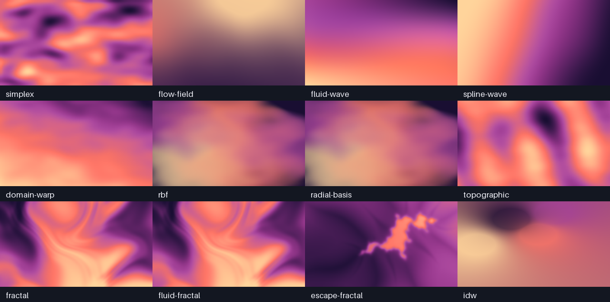
01 · Field engines
Twelve registry keys, eleven classes, and some shared behavior. The hero grid uses one fixed scene (Julia for escape-fractal); the index below shows each card’s first setting. Every pair resets the seed and changes one active control. IDW compares color count instead. Bracketed ranges below are calibration selections, not universal CLI bounds; the fractal camera also has its own sampling rules. Aliases and shared wrappers are identified rather than counted as different algorithms.
INDEX — FIRST SETTING FROM EACH COMPARISON
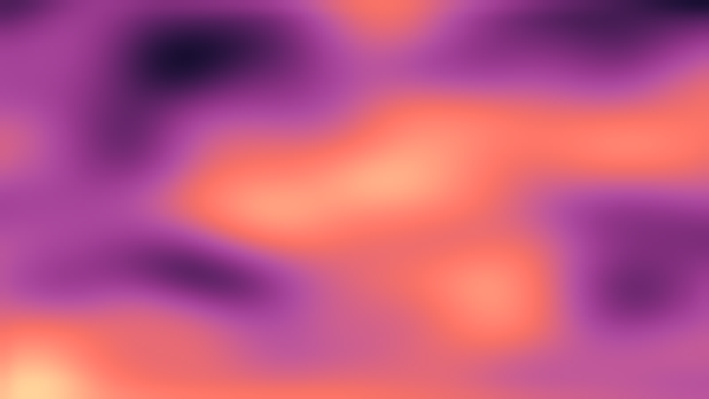
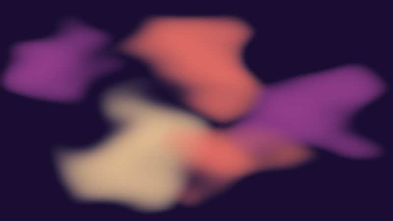
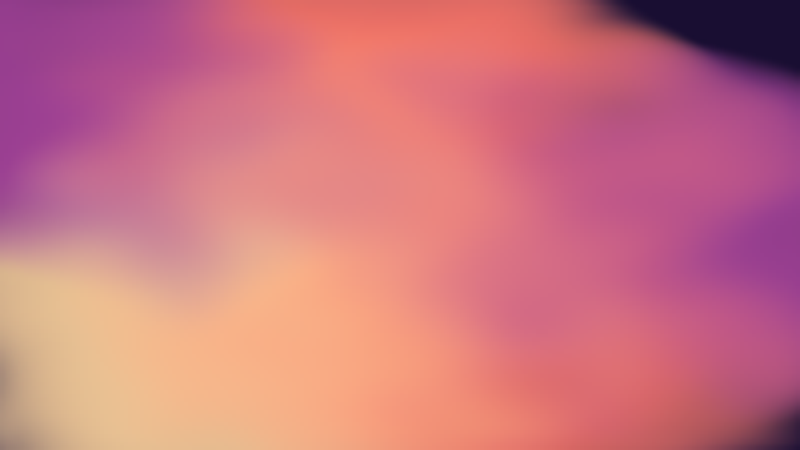
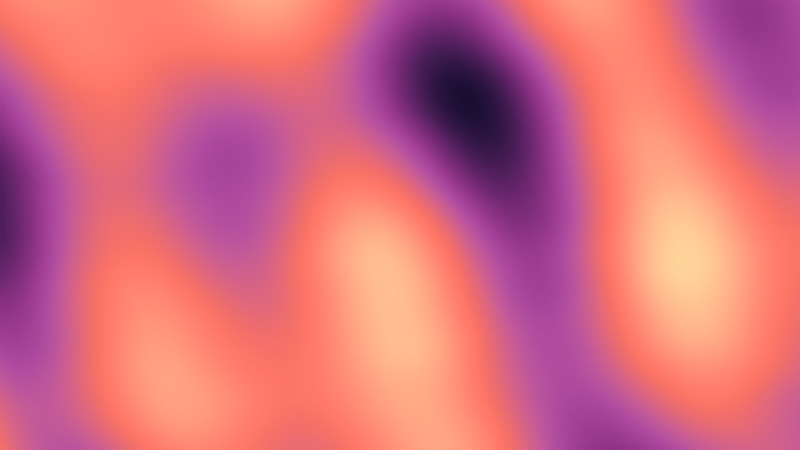
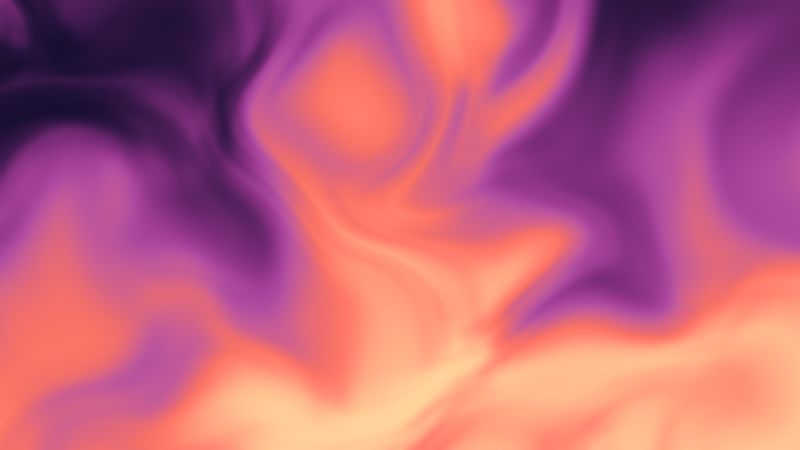
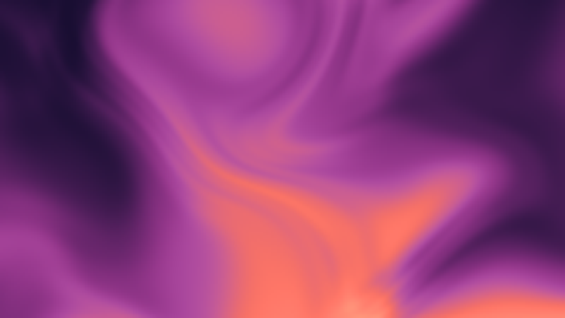
DIRECTIONAL SWEEPS + WARPING
domain-warp — DomainWarpGradient
Paint a straight gradient across a rotated canvas, then stir the coordinates with noise — twice, the second stir warped by the first. Turn the stir up and folds go turbulent.
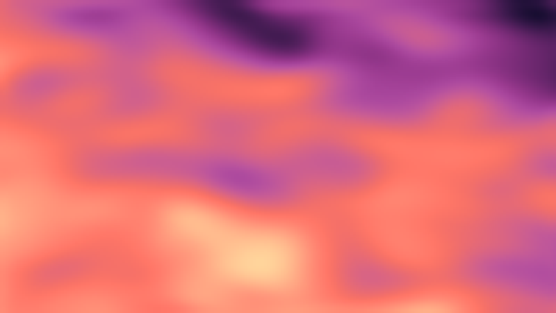
Knobs: complexity [2–6] · warp_strength [0.25–0.90] (lab limits 0–2.5) · transverse_warp [0.04–0.22], not exposed by the CLI; sampled unless set by config or preset.
RANDOMIZED sweep angle, noise offsets, warp fields. FIXED the double-lookup structure.
simplex — SimplexMeshGradient
The simplest engine: one rotated sweep plus one layer of 2D Simplex noise. Complexity sets how many folds the noise is allowed, not how many colors.
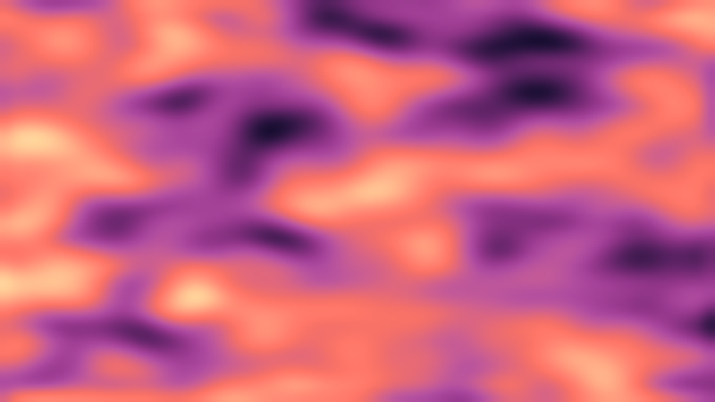
Knobs: complexity [2–6] · fluid_mode random|spatial (accepted, currently inert).
RANDOMIZED sweep angle, noise field. FIXED single-noise-layer structure.
spline-wave — SplineWaveGradient
Warp the coordinates with Perlin noise first, then sweep across them and snap the result through a smoothstep for contrast. The warp decides how wavy the bands get.
Knobs: complexity [2–6] · warp_strength → spline_warp [0.12–0.42] (lab limits 0–1.2).
RANDOMIZED Perlin offsets, sweep angle. FIXED sweep-then-contrast pipeline.
fluid-wave — FluidMeshGradient
A fixed sine-times-cosine fold on a rotated sweep, sampled on a coarse grid and bicubic-upscaled. Complexity changes the grid density, not blob placement. The sleek/nocturne workhorse.
Knobs: complexity [2–6] · fluid_mode random|spatial (accepted, inert; not used for this comparison).
RANDOMIZED sweep angle. FIXED the trig fold + upscale smoothing.
2D SPATIAL POINT EMITTERS
rbf — RadialBasisGradient
Scatter soft radial glows across a warped grid and melt them into each other over a dark anchor color. Dispersion is glow size: small values give distinct pools of color, large values flood the canvas.
Knobs: complexity [2–6] · warp_strength → rbf_warp [0.20–0.95] (direct dispatcher fallback 1.0; pipeline samples the range) · ambient_weight [0.08–0.28] · dispersion [0.24–0.55] (lab limits 0.08–1.20).
RANDOMIZED emitter positions, warp grid, per-run. FIXED smoothstep falloff shape.
Background anchoring — radial-basis is an RBF alias
Literally the same code as rbf — an alias key from the prototype era. Shown here through its other headline knob: the background anchor fighting the emitters.
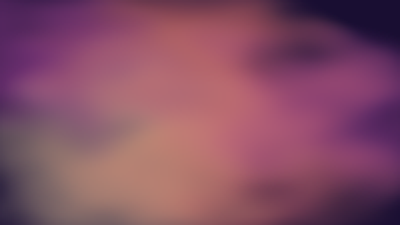
Knobs: identical to rbf. FIXED everything structural — only the sampled values differ run to run.
flow-field — FlowFieldGradient
Point emitters whose weights fall off with inverse square distance, evaluated over a Perlin-warped grid. The warp bends their blended color territories; the algorithm does not generate rings.
Knobs: complexity [2–6] · fluid_mode random|spatial (inert, as everywhere) · warp_strength → flow_warp [0.18–0.55] (lab limits 0–1.5).
RANDOMIZED emitter positions, warp offsets. FIXED the 1/d² falloff law.
idw — MeshGradient (legacy)
Inverse-distance blending around randomly placed interior anchors, without coordinate warping. More colors add more anchor territories. The same seed makes placement reproducible; it is not a randomness-free engine.
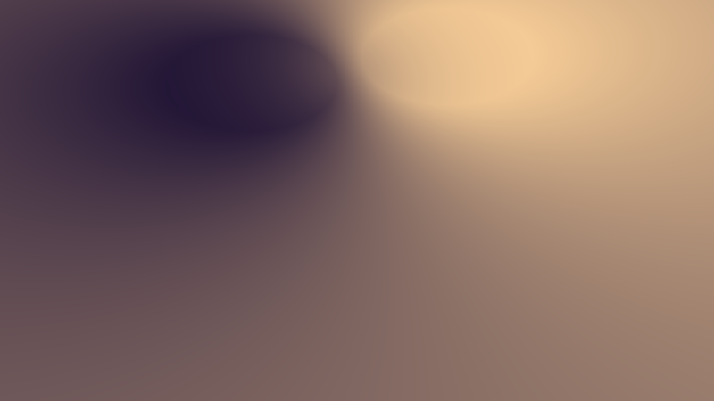
Knobs: palette count; p=2.5 and softness=0.12 fixed by the dispatcher. Select with --engine idw or --legacy-idw. RANDOMIZED interior anchors. FIXED softened distance falloff.
HARMONIC ELEVATION
topographic — TopographicGradient
Three interfering sine waves make hills, Simplex noise roughens them, and the palette paints elevation like a hiking map. More warp = more rugged terrain.
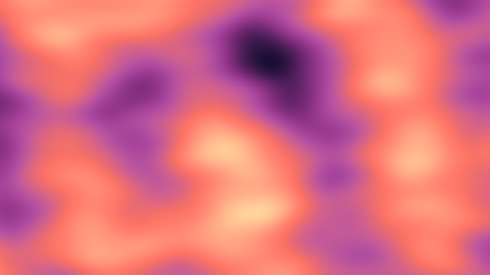
Knobs: complexity [2–6] · warp_strength → topo_warp [0.25–0.95] (lab limits 0–2.5; generator fallback 0.85).
RANDOMIZED rotation angle, noise offsets (wave phases are fixed). FIXED the three-wave interference pattern.
FRACTAL FIELDS — ONE CORE, FLUID AND ESCAPE-TIME MODES
fractal — FractalFieldGradient
Zoom a camera into iterated trigonometric warping — each octave folds the last one's output. Zoom out for macro sweeps, zoom in for intricate detail.
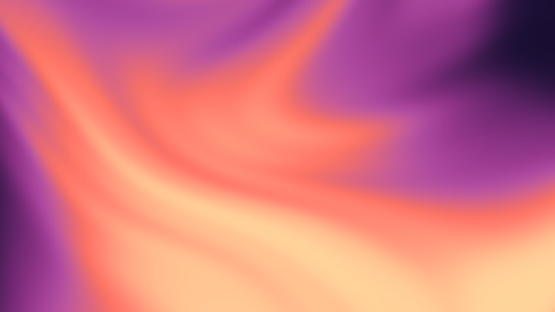
Knobs: complexity [2–6] · zoom [0.45–1.85] (lab limits 0.25–3.5) · center · angle · phase_offset · frequency [0.65–1.45] · trap_weight [0.20–0.55] · channel_offset.
RANDOMIZED fold phases per octave. FIXED iteration structure. Unset cameras sample macro/medium/detail zoom tiers and off-screen, corner, or centered focal points; these comparisons pin the camera.
Fluid mode — fluid-fractal wrapper
A dedicated wrapper around the same fluid branch used by fractal --fractal-type fluid, not a separate nesting algorithm. Frequency changes the carrier field. With identical arguments these two keys produce identical images.
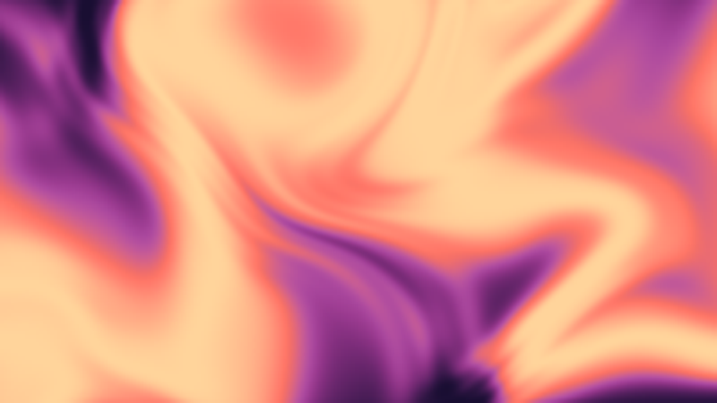
Knobs: fluid controls shared with fractal; no trap_weight argument.
RANDOMIZED fluid-field phases and unspecified camera. FIXED shared fluid algorithm.
Escape-time modes — escape-fractal wrapper
True complex dynamics: iterate z² + c and paint how fast points escape, with geometric orbit traps carving structure into the field. Trap weight blends smooth escape glow against trap geometry (Julia mode shown).
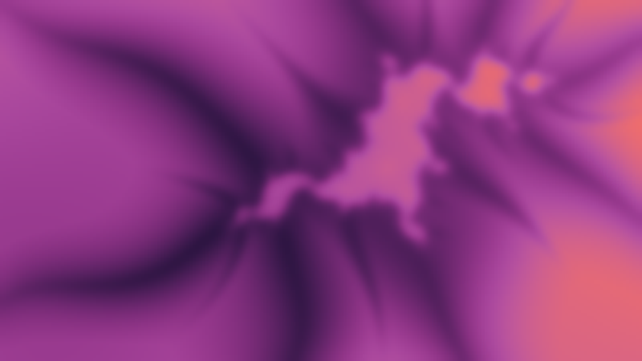
Knobs: fractal set (julia / mandelbrot) · trap_weight [0.20–0.55] (lab limits 0–1) · zoom · center · phase_offset · frequency · channel_offset.
RANDOMIZED orbit seeds, escape sampling. FIXED the z² + c iteration.
02 · Support primitives
engine/gradients/spatial.py — the shared math engines call into. Offsets and seeds re-roll every run; the algorithms don't change.
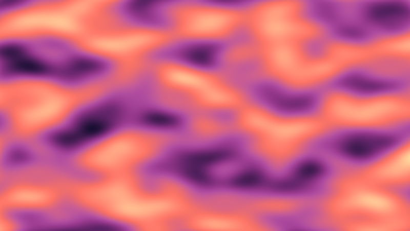
Coordinate warp
warp_coordinates_perlin(width, height, complexity=5, warp_range=(0.5, 0.5)). The same palette maps x before and after displacement. Offsets and noise scale are seeded; the warp strength is pinned.

Field normalization
normalize_scalar_field(field) remaps the same compressed trig-fBm field to [0, 1]. Palette and field structure stay fixed; only the value range changes. The noise field is seeded, normalization itself is deterministic.
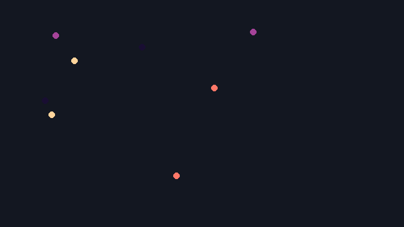
03 · Field-to-color mapping
engine/gradients/interpolation.py — turning scalar fields into color.
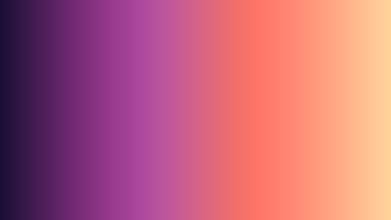
Decoupled palette mapping
evaluate_decoupled_palette takes separate lightness and chroma/hue fields. Before: both follow x. After: lightness still follows x, chroma/hue follows y. Pure mapping, no randomization.

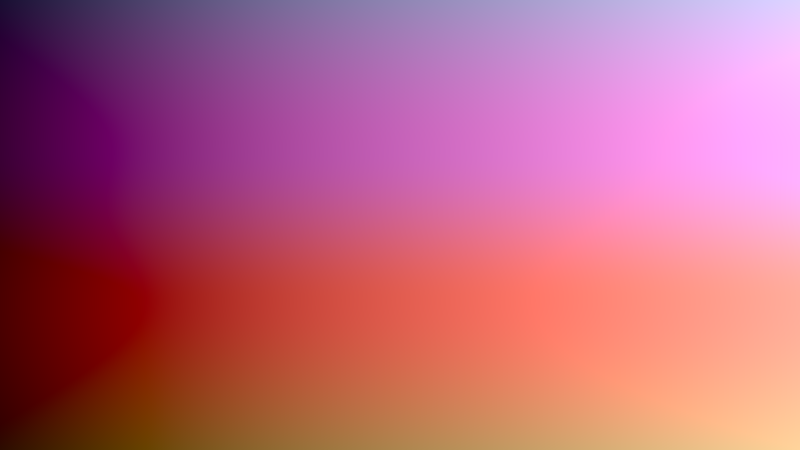
04 · Palette primitives
Preset recipes shown at seed 7, before harmonization. Curated families cycle deterministically by seed; other recipes sample within their distributions. These swatches show preset behavior, distinct from the curated comparison palette used for fields and finishes.
simplexsimplex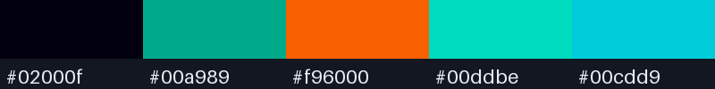
simplexsimplexsimplex (grain provides the finish)simplex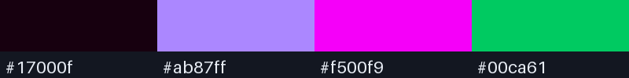
fluid-wave fixedfluid-wave fixedfractal fixedidw fixedGenerators
PresetEngine.generate_palette— anchor + relative-hue accentssample_distribution— uniform / uniform_int / gaussian+clip / beta+scale / bimodal / relative; fixed shapes, sampled values- Curated
palette_families— fixed hex lists, cycling by seed (family selected deterministically by seed) _sample_dynamic_palette— HLS fallback with no preset
Harmonizers (engine/colors.py)
harmonize(mode="perceptual")— clamps L to [0.12, 0.90], C to [0, 0.25]; hue preservedharmonize(mode="triadic" …)— Python API only; CLI modes are perceptual, theory, nothing, noneadjust_for_nothing— forces low-chroma tones near-neutral (C ≤ 0.015)
One curated input palette for all three comparisons. perceptual preserves hue; theory uses the preset’s harmony mode (analogous by default). With no preset, no custom colors, and no explicit harmonizer, the pipeline chooses perceptual harmonization with probability 2/3.
Perceptual bounds
Triadic harmony PYTHON API
Nothing-style harmonizer
05 · Finish passes, before / after
Six implemented primitives, each applied alone to exactly the same unfiltered image. Five are wired in order: contours → glass → aberration → grain → vignette. --preview-fx compares the base with the entire enabled stack, not a single isolated effect. Parameters below are explicit demonstration settings, not claims about sampled defaults.
Contour isobars
apply_contour_lines(levels=24, line_width=1.4, intensity=0.85, mode="light"). Lines follow smoothed image luminance, not the generator’s original elevation field. Default intensity 0 (off).
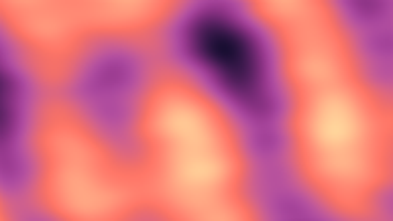
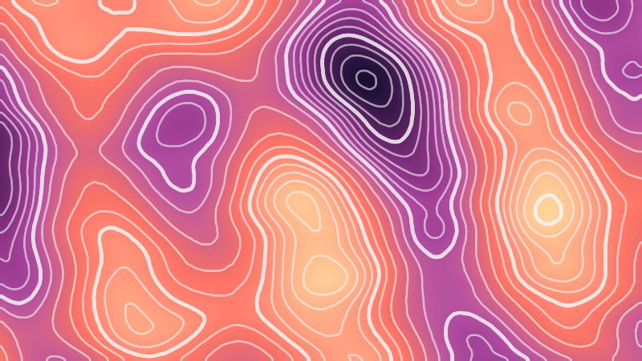
Frosted glass
apply_frosted_glass(blur_radius=60, noise_amount=0.15). Blur plus seeded screen-blended frost. Pipeline glass is a boolean (default off), with these two values hardcoded—not independently sampled knobs.
Chromatic aberration
apply_chromatic_aberration(strength=0.06, mode="radial"). Red and blue shift in opposite directions; green stays put. Exaggerated here for visibility. Default strength 0 (off).
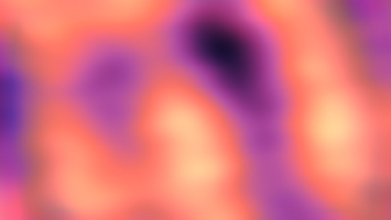
Film grain
apply_film_grain(amount=0.10). Seeded fine noise plus coarse clumps, weighted toward midtones. The pipeline samples the noise range when no override exists; this intentionally stronger example reveals the texture.
Inspect texture — same crop, enlarged 3× without smoothing

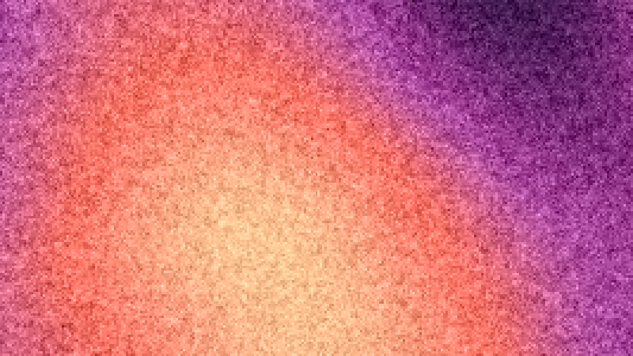
Vignette
apply_vignette(strength=0.55). A deterministic radial edge falloff, stronger here for visibility. Default strength 0 (off).
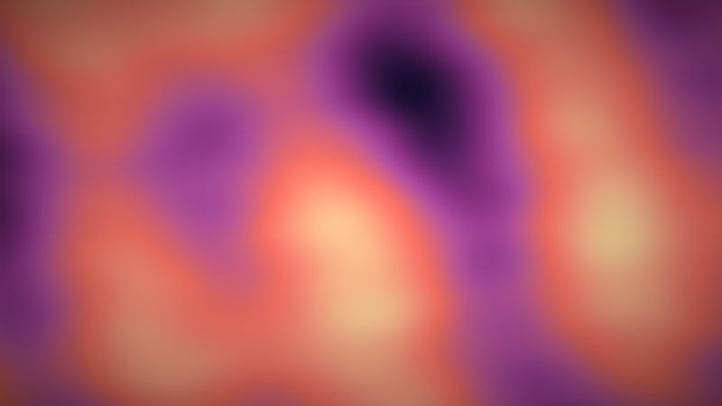
Bounded monochromatic dither
apply_dither(amount=0.05). Seeded bounded noise with shadow/highlight roll-off. Python API only: defined, but not wired into the pipeline or CLI.
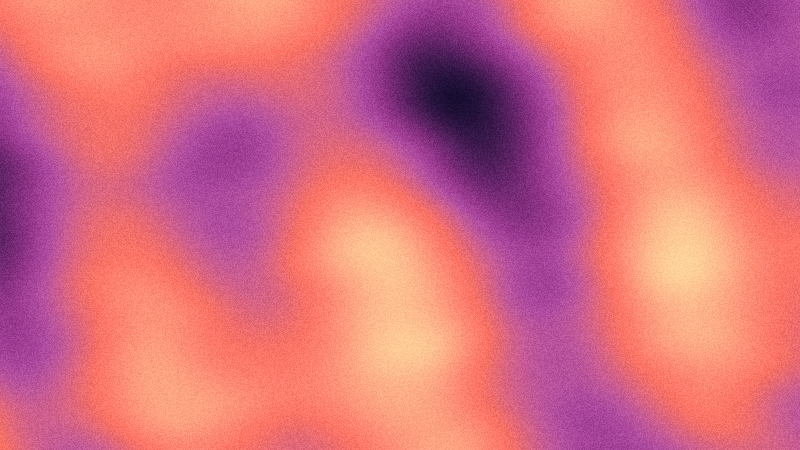
Inspect texture — same crop, enlarged 3× without smoothing
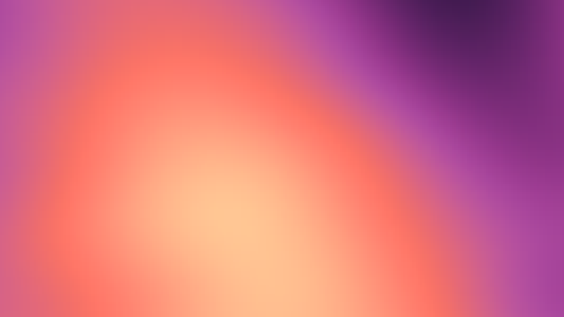
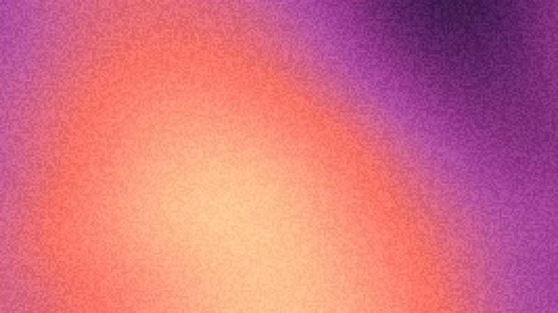
More controls: contour density
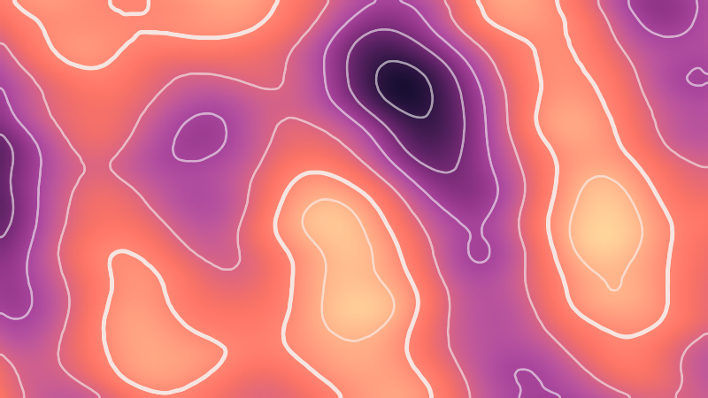
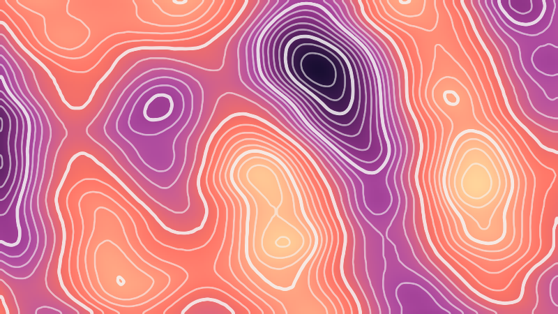
06 · Composition: one full run
How a preset uses the primitives to produce an output — afterglow, seed 7. Then the general rule every call follows.

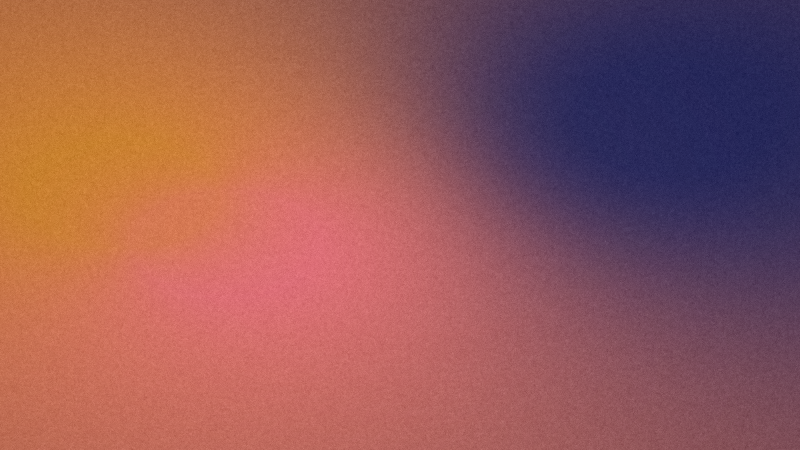
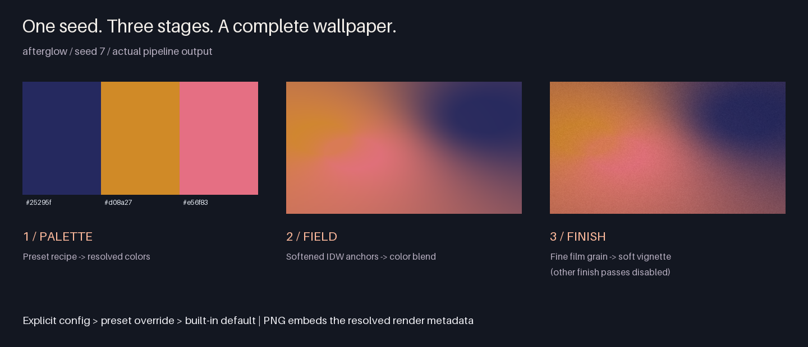
Preset = sampling program
A named JSON recipe: palette distributions, optional engine pin, optional finish values. Ten exist; four pin an engine, six fall back to simplex.
Engine = field math + knobs
A registered generator class. Twelve keys, four families. Unset knobs use a mix of sampled ranges and fixed defaults. The /calibrate lab tunes ranges, but not every range is consumed by rendering.
A call is one path: pick engine (flag → preset pin → simplex) → resolve every knob (explicit flag → preset override → built-in default or sampling) → render field through palette → apply finish in fixed order → PNG with embedded metadata.
Next direction: moiré interference
The only retained effects candidate; not implemented. Inspired by Moiré Field on 21st.dev, whose description layers “two identical ring rulings.” A static adaptation could combine slightly offset fine wave fields into larger interference bands, with restrained contrast so the gradient stays primary. Supersampling would control accidental aliasing. This is a proposed image-making technique, not a copied React component; source code and live previews have not been audited.
Reproduce the guide
No build system or browser dependencies for the page. Examples are generated by the real Python primitives, using explicit settings and seed 7. The asset manifest records inputs and recipes; the render script supplies the complete construction.
uv sync uv run python -m tools.render_showcase uv run python -m http.server 8080 --bind 127.0.0.1 # Open http://127.0.0.1:8080/ # A wallpaper through the normal CLI: uv run python main.py --preset afterglow --seed 7 --res 800 450 --output output/afterglow.png